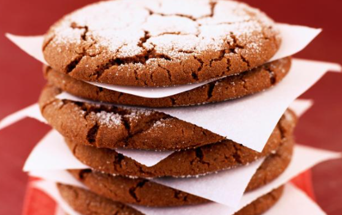

receipten chocoladekoekje

Ingredienten voor 30 stuks
- fondantchocolade 100 g
- griessuiker 100g
- maïszetmee l60g
- boter (zachte, of margarine) 150 g
- ei 1
- bruine suiker (cassonade) 80g
- patisseriebloem 200g
- bakpoeder2 kl
Bereiding
- Verwarm de oven voor op 180°C.
- Laat de chocolade samen met 20 g boter smelten.
- Meng de fijne suiker en de bruine suiker met de rest van de zachte boter en roer tot een romige massa.
Schenk er de gesmolten chocolade bij. Roer goed glad.
Strooi er de gezeefde bloem en het maïszetmeel bij en vermeng.
Voeg er tot slot het ei aan toe en bewerk tot een glad deegje.
Zet 30 minuten in de koelkast.
- Maak een twintigtal deegbolletjes. Leg ze ver genoeg van elkaar op een bakplaat,
op bakpapier. Druk de balletjes plat met de rugkant van een lepel.
- Bak de koekjes 8 à 10 minuten in de oven op 180 °C.
Laat ze afkoelen op een rooster. Werk eventueel af met gezeefde bloemsuiker.